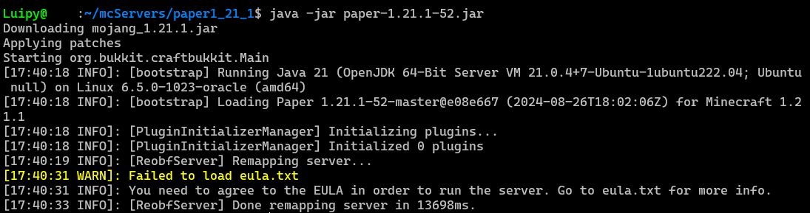
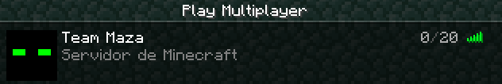
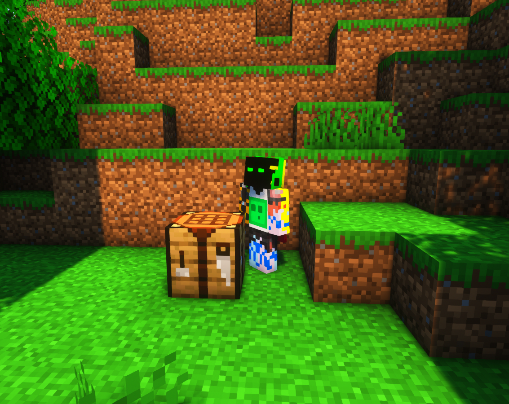

Con esta guía podrás crear tu propio servidor Java-Bedrock al que cualquier usuario podrá conectarse.
Para disponer de un servidor de Minecraft, necesitarás una máquina con acceso a internet y de la cual puedas modificar sus puertos de acceso y sus protocolos.
Estos puertos permitirán a las peticiones realizadas por los clientes llegar al servidor y salir de vuelta. Esta guía se realizará en Ubuntu.
Respecto a los puertos, si tu máquina está en local, es decir, en tu casa, teberás abrir los puertos necesarios en el Router, en caso de ser una máquina externa, comprada/alquilada, tendrás que habilitarlos por software, si es necesario, iptables, proxy etc y/o en su respectivo panel de puertos. Lo mejor será abrir los purtos bidireccionales en modo tanto UTP como TCP. Para saber más sobre puertos ver: To Be Continued
Tener en cuenta tus objetivos es esencial para esta parte. Conocer el número de jugadores activos que tendrá el servidor es clave. A continuación te recomendaré unos estándares que deberás coger con pinzas, ya que no tengo ni papa de hardware, Minecraft necesita sobretodo una buena CPU y varios GB de RAM
Los siguientes valores de RAM no corresponden a la cantidad instalada en la máquina, sino a la cantidad que deberás reservar para su uso. Por ejemplo, si necesitas 6 GB de RAM para tu proyecto, no adquieras una máquina con solo 6 GB de RAM, ya que el sistema operativo necesita memoria adicional para funcionar correctamente. Para un sistema operativo ligero, reserva al menos 2 GB de RAM. Por lo tanto, si necesitas 6 GB para Minecraft, te recomendamos adquirir una máquina con al menos 8 GB de RAM.
Si tu objetivo es jugar en una de las últimas versiones de Minecraft pero con no demasiados jugadores, un barémos de 5GB será lo recomendable, el almacenamiento dependerá de cuantos backups quieras hacer. Por supuesto, estos pueden ser externos, por lo que no necesitarías más almacenamiento en la máquina, por lo que unos pocos GB de almacenamiento ya serían suficientes para mantener el servidor. Si pretendes hacer un servidor extenso, no escatimes en almacenamiento o cosas turbias ocurrirán.
Las versiones anteriores a la 1.18 consumen muchos menos recursos, sobretodo RAM y almacenamiento.
Más jugadores se traduce en una mayor cantidad de RAM.
Como ya podrás haber comprobado, no tengo ni idea de las especificaciones que realmente necesita un servidor, tú métele RAM
Ante la duda, ni caso, tú metele una buena CPU y to la RAM que dé el bicho.
Podríamos hacer nuestro servidor full vanilla, pero es mucho mejor utilizar Software que mejoren el rendimiento de nuestro servidor. Por ello, elegiremos el Software que más nos convenga, en este caso Paper, pero podrías utilizar, Spigot, Bukkit.. o lo que prefieras.
Si en tu caso prefieres hacer un full vanilla, o no encuentras Softwares de terceros para la versión que quieres lanzar, como una Snapshot, puedes conseguir el lanzador de cualquier versión directamente en el Launcher Oficial de Minecraft. Para ello accede a Instalaciones, presiona en crear una nueva instalacción, selecciona la versión que desees y presiona en SERVER, esto te descargará el .jar que necesitaremos para lanzar el servidor.
En caso de Paper u otros Softwares, accede a su página web oficial y descarga el instalador que necesites.
Una vez tengamos el .jar, ya sea vanilla o de terceros, colócalo en el directorio/carpeta donde desees que se lance el servidor. Si estás en un entorno de terminal, puedes descargar el .jar directamente en este directorio utilizando un comando como el siguiente:
# Comando wget en Ubutnu:
wget -P /ruta/al/directorio https://ejemplo.com/archivo.jar
#Recuerda cambiar la ruta y la URL
Ahora tocará lanzar el .jar para que automáticamente se nos creen las dependencias, para ello:
# Lanzar .jar
java -jar archivo.jar
#Recuerda cambiar el nombre del archivo
Si todo va como esperabamos, el servidor se lanzará y se cerrará dando un error de EULA, pero habrá creado los archivos necesarios. Ejemplo:
Gracias al .jar se nos habrán creado 5 directorios y 2 archivos de texto. Lo primero será habilitar el EULA, con lo que estaremos aceptando los términos y condiciones de Minecraft. Será tan sencillo como abrir el archivo y cambiar "eula=false" por "eula=true".
Ya podríamos lanzar el servidor y jugar, pero es recomendable editar la configuración del servidor para una mejor experiencia de juego. Para ello, abriremos el archivo server.propierties
Aquí encontraremos unas 60 configuraciones báscias, a continuación te mostraré mis recomendaciones, el orden de las directrices puede cambiar y NO añadas más directrices, sólo edita las existentes:
# Si el servidor cuenta con suficiente RAM, aumentar el número de Chunks de Render hasta 16
view-distance=16
# Siempre empezaremos con una dificultar en "easy" pero puedes cambiarla aquí
difficulty=hard
# Si necesitas utilizar Blockes" de comandos:
enable-command-block=true
# Si necesitas una whitelist
enforce-whitelist=true
# En qué modo de juego aparecerán los jugadores?
gamemode=survival
# Servidor Hardcore?
hardcore=true
# Si quieres que tu mundo tenga una semilla en concreto:
level-seed=NúMEROS
# Especificar el máximo de jugadores
max-players=20
# Tamaño máximo de jugadores
max-world-size=29999984
# Aunque es mejor utilizar comandos como setworldborder
# Descripción del servidor
motd=Servidor de Minecraft
# Evita utilizar carácteres raros como acentos
# Servidor premium/nopremium? Colóca "False" si es NoPremium
online-mode=false
# Esta opción es peligrosa, ya que de esta manera estás diciendole al Servidor
# que no compruebe si el jugador es quien dice ser, por lo que cualqueira podría entrar
# con la cuenta de otro jugador, recomendable instalar plugins de autenticación
# Fuego amigo
pvp=true
# Si necesitas editar el puerto y la IP del servidor, ante la duda dejar como estaba
server-ip=
server-port=25565
# Radio de blockes" que NO se podrán romper en el Spawn del mundo en survival
spawn-protection=16
Ya es hora de lanzar nuestro servidor y poder jugar en él, para ello utilizaremos este comando, es imporante lanzarlo estando en el mismo directorio que el archivo, sino el eula puede dar error:
# Lanzar el .jar
java -Xms4G -Xmx8G -jar nombreDelArchivo.jar
Puedes editar los prámetros de -Xms y -Xmx para especificar la RAM mínima que utilizará el servidor y el máximo respectivamente. Recuerda NO saturar al sistema operativo, dejando 1 o 2 GBs libres de la máquina.
Al lanzar el .jar, estarémos "conviertiendo" la shell en una consola del servidor, por lo que no podrás cerrar esta ventana y todo el log aparecerá por aquí, si deseas poder cerrar la ventana, utiliza librerías como "screen".
Si todo va bien, ya podrás acceder al servidor utilizando la IP pública de la máquina y el puerto default (25565) en caso de que nos lo pida.
Si ha habido algún error, aparecerá el culpable en la misma consola.
 Dividiremos esta parte en 2 secciones, plugins recomendados y plugins para habilitar a los jugadores de Bedrock
A continuación veremos X plugins que yo mismo instalaré para mi servidor NoPremium: